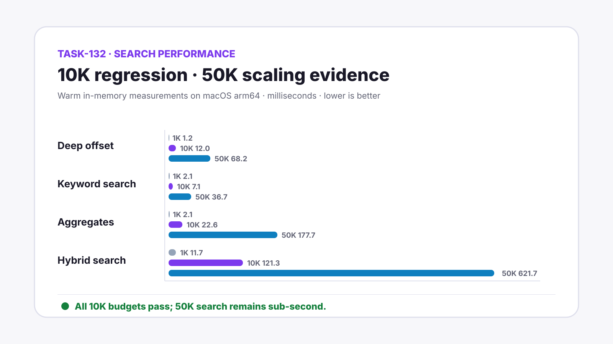

Grimoire Task Report
Large-Library Search Performance

Before
The separate performance command used a 2K bookmark fixture and did not exercise domain/date/combined filters, aggregate counts, full hybrid scoring, or representative query plans together.
Problem
Little Imp needed evidence that its search-first workflow remains responsive at 10K bookmarks and a clear boundary for sqlite-vec versus durable BLOB fallback behavior.
Changes Added
- Raised the default deterministic fixture to 10K bookmarks and added domain, date, combined-filter, aggregate, deep-offset, and hybrid measurements.
- Added query-plan assertions for FTS5 and tag-index use, with plans printed for review.
- Made large fixture generation practical by bulk-building the same FTS documents after synthetic inserts.
- Handled sqlite-vec's 4,096-neighbor capacity as an exhaustive-query fallback instead of disabling a healthy vector mirror, including bounded filtered over-fetch coverage.
- Added a dedicated GitHub Actions job to enforce the 10K budgets independently of the fast quality suite.
- Recorded local 1K, 10K, and 50K evidence and documented why no new aggregate cache or composite ordering index is justified yet.
Result
The 10K regression path stays far inside its budgets. On the reference host, aggregate counts measured 22.6 ms and exhaustive hybrid ranking measured 121.3 ms at 10K; at 50K they measured 177.7 ms and 621.7 ms respectively.
Verification
npm run test:performanceLITTLEIMP_DISABLE_SQLITE_VEC=1 npm run test:performanceLITTLEIMP_PERFORMANCE_SIZE=1000 npm run test:performanceLITTLEIMP_PERFORMANCE_SIZE=50000 npm run test:performancenpm run check- Focused
EmbeddingRepositoryvector-index tests - Dedicated GitHub Actions performance job configuration and YAML parse
Implementation Notes
sqlite-vec remains the fast path for bounded nearest-neighbor lookups when enough filter-eligible rows are available inside its 4,096-neighbor window. Exact exhaustive semantic and hybrid ranking, plus unusually sparse filtered searches that need a wider scan, use the durable BLOB path without marking the derived mirror unhealthy.
Files Changed
.github/workflows/quality.ymldaemon/src/db/embedding-repository.tsdaemon/src/test/embedding-repository.test.tsdaemon/src/test/performance/large-library-fixtures.tsdaemon/src/test/performance/large-library-performance.tsdocs/performance.mddocs/task-reports/2026/07/2026-07-12-task-132-large-library-search-performance/index.htmltasks/done/TASK-132-large-library-search-performance.md
Follow-ups
Revisit materialized aggregate counts or a composite active-library ordering index only if real libraries approach the 50K profile and measured disk-backed latency becomes user-visible.